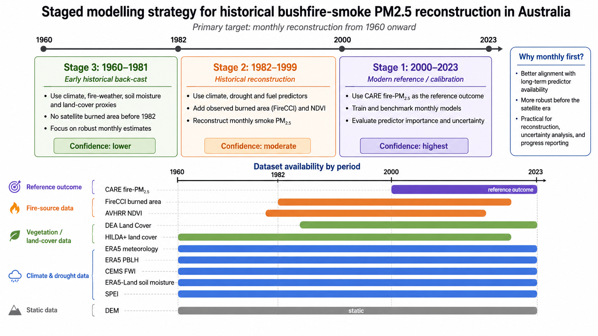

Progress update - 2026-07-16
Historical predictor datasets and staged modelling strategy
The current milestone is preparation of historical predictor datasets for reconstructing bushfire-smoke PM2.5 exposure in Australia. The primary modelling target is monthly reconstruction from 1960 onward, using the modern CARE fire-PM2.5 product as the 2000-2023 reference outcome for calibration. Newly assembled historical predictors now support a staged, uncertainty-aware reconstruction strategy.
Overview
From modern reference evidence to historical reconstruction inputs
This update extends the v0.2.0 progress-evidence site. It records the currently available predictor stack and the staged modelling logic that will guide the next phase. It does not claim that historical reconstruction or model validation has been completed.
Modelling Inputs
Currently available modelling datasets
| Dataset | Role in modelling | Time coverage | Temporal resolution | Notes |
|---|---|---|---|---|
| DEA Land Cover | Australia-specific land-cover and fuel-context refinement. | 1988-2024 | Annual | 30 m land-cover classes; useful for later-period land-cover refinement and comparison with coarser historical products. |
| ERA5 meteorology | Core climate backbone for smoke-generation and dispersion predictors. | 1960 onward target | Daily, aggregated to monthly | Includes temperature, dew point, precipitation, surface pressure, wind components, and ventilation-related variables at approximately 0.1-degree resolution. |
| ERA5 PBLH | Boundary-layer and atmospheric mixing context. | 1960 onward target | Daily, aggregated to monthly | Used to represent mixing depth / dispersion conditions in the monthly modelling table. |
| CEMS FWI | Fire-weather and fuel-dryness summaries. | 1960 onward target; product available from 1940 to present | Daily, aggregated to monthly | Includes FWI, FFMC, DMC, DC, ISI, BUI, and severity indicators. These are meteorology-derived indices, not independent fire occurrence observations. |
| HILDA+ | Long-term land-use / land-cover and broad fuel-availability proxy. | 1960-2020 | Annual, joined to monthly rows | States layers are the first-pass input; transition layers can support later change diagnostics. |
| ERA5-Land soil moisture | Moisture and antecedent dryness predictor. | 1960 onward target; product available from 1950 to near-real-time | Monthly | Soil water layers 1 and 2 provide near-surface and shallow-root-zone moisture context. |
| SPEI | Drought and climatic water-balance context. | 1960 onward target; product available from 1901 onward | Monthly | SPEI01, SPEI03, SPEI06, and SPEI12 represent short- to longer-term dryness. |
| FireCCI | Observed burned-area source proxy for satellite-era reconstruction. | 1982-2018; 1994 missing | Monthly | Main observed burned-area source for 1982-1999 and a modern cross-check. No coverage for 1960-1981. |
| AVHRR NDVI | Vegetation greenness and fuel-condition proxy. | 1981-2013 | Daily source aggregated to monthly | Monthly mean, median, maximum, and valid-count summaries support vegetation-condition modelling. |
| DEM | Static topographic predictor. | Static | Static | Elevation and derived terrain metrics can support spatial structure in the reconstruction model. |
Coverage is reported from the current data documentation and is intentionally conservative where detailed processing checks are still pending.
Staged Modelling
Staged modelling strategy

- Stage 1, 2000-2023: modern CARE reference period for calibration and diagnostics.
- Stage 2, 1982-1999: historical reconstruction with observed burned area and NDVI available.
- Stage 3, 1960-1981: earlier reconstruction using climate, drought, fire-weather, soil-moisture, and land-cover proxies.
- Monthly reconstruction is prioritised because predictor availability is more consistent before the satellite era.
- Confidence varies across periods and should be interpreted accordingly.
What this means for the next phase
The next step is to build a monthly modelling table and begin staged reconstruction using the assembled predictors. This will involve harmonising predictors to the modelling grid and monthly temporal structure, calibrating against the modern CARE reference period, back-casting earlier periods with stage-specific predictor sets, and quantifying uncertainty by period.